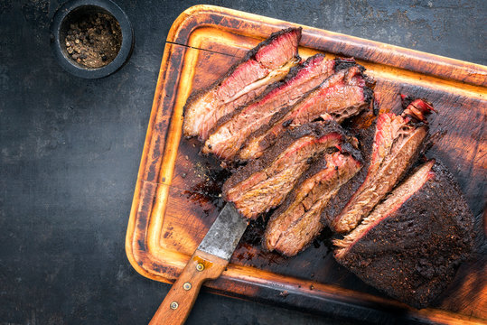

Brisket

Texas-style brisket is more than just food you eat, it's a slow, rewarding process that leaves you with the most delicious, juicy sliced beef you will ever have. This recipe implies you already have a smoker of any type and all the required accoutrement to run it.
Ingredients
- 1/4 cup paprika
- 1/4 cup white sugar
- 1/4 cup ground cuming
- 1/4 cup cayenne pepper
- 1/4 cup brown sugar
- 1/4 cup chili powder
- 1/4 cup garlic powder
- 1/4 cup kosher salt
- 1/4 cup freshly cracked black pepper
- 10 pounds or more of beef brisket
Steps
- Mix paprika, white sugar, cumin, cayenne pepper, brown sugar, chili powder, garlic powder, onion powder, salt, and black pepper together in a bowl. Rub the spice mixture over the entire brisket; refrigerate for 24 hours.
- Preheat smoker to between 220 degrees F (104 degrees C) and 230 degrees F (110 degrees C).
- Smoke brisket in the preheated smoker until it has an internal temperature of 165 degrees F (74 degrees C), about 12 1/2 hours. Wrap brisket tightly in butcher paper or heavy-duty aluminum foil and return to smoker.
- Continue smoking brisket until an internal temperature of 205 degrees F, or until you can stick a probe into it and there is no resistance, like butter.
Back